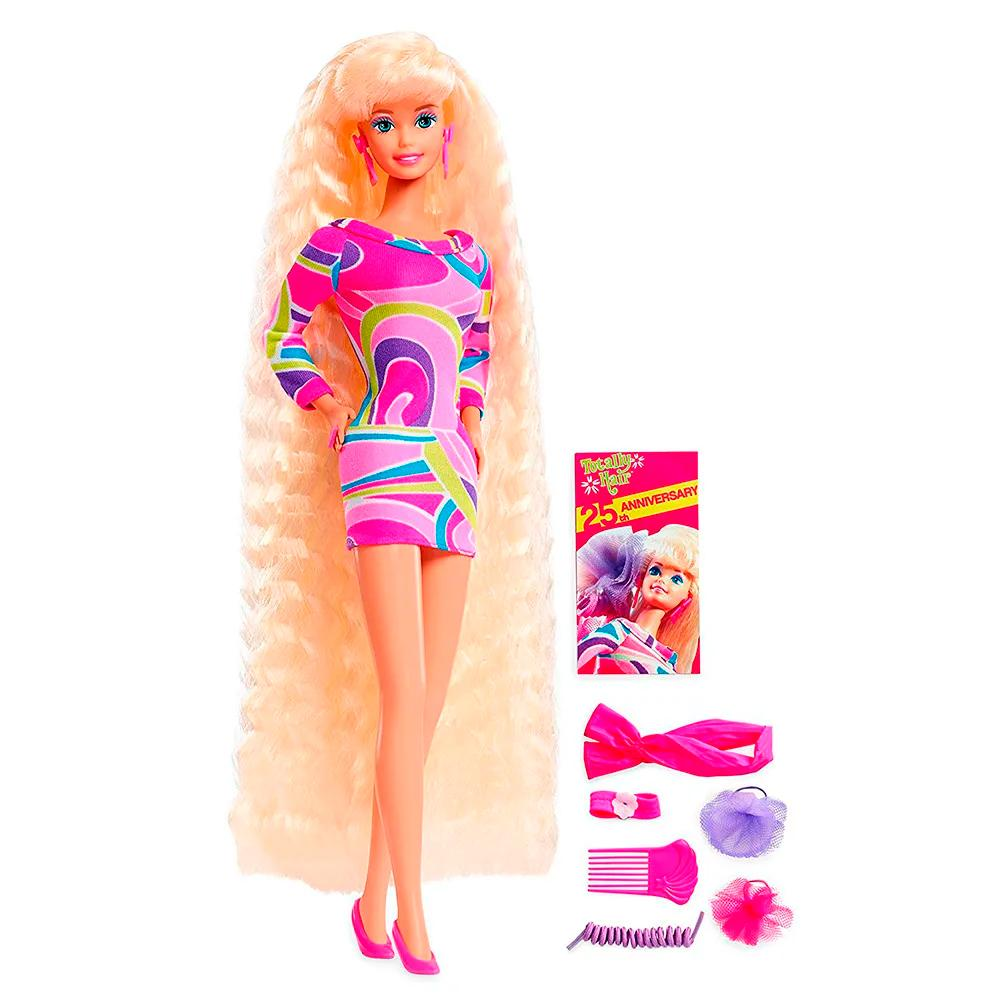

En 1998, se dio a la muñeca una figura más realista, con un torso más ancho, mientras que en 2000, la Barbie Jewel Girl incorporó cintura flexible y ombligo. Los últimos diseños representan a la muñeca con nuevas formas –alta, curvilínea y petite– y tonos de piel. No obstante, la más vendida hasta ahora es la Barbie Totally Hair (1992).
 Ir a la celebración de los 60 años
Ir a la celebración de los 60 años